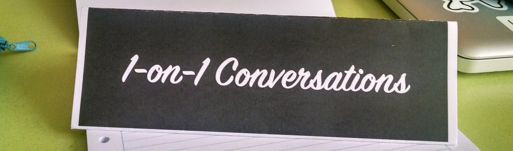

What is 1-on-1 Conversations?
1-on-1 Conversations (1o1c hereafter) is a movement that promotes language learning through in-person meetups. It is also the name of the format used for running these meetups.
The goal of 1o1c is to create communities (meetup groups) in as many cities as possible, where people can come together to practice language conversation skills with each other. For example, in Phoenix, Arizona, there is a 1o1c meetup every Thursday evening for people that want to practice Spanish. In Lima, Peru, there is a 1o1c meetup every Sunday for people that want to practice English.
What makes 1o1c meetups unique?
1o1c meetups follow a specific format that allows everyone to talk to as many people as possible on a 1-on-1 basis, for an arbitrary number of minutes of time (i.e. 10 or 15). For more information about how to run a 1o1c meetup, check out our recipe.
Where do I find one?
At the moment, this is the list of cities where you can find a 1o1c meetup.
| Country | City | Frequency | Group |
|---|---|---|---|
| Peru | Lima | Weekly | Conversando en Inglés |
| USA | Phoenix | Weekly | Practice Spanish via conversation |